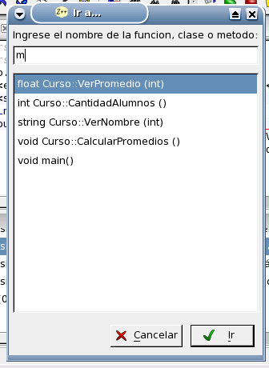
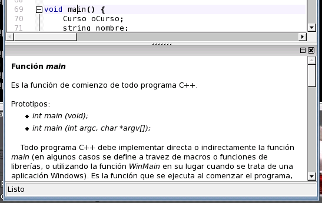

Otro error que aún no ha sido solucionado está en el prototipo de la función "main". El tipo de retorno de esta función ha sido declarado void en este código, pero esta práctica, a pesar de estar permitida en algunos compiladores, contradice las reglas del ANSI/ISO C++. Presione Ctrl+Shift+G para desplegar el cuadro Ir a Funcion/Clase/Metodo. Este cuadro nos permite ir rápidamente a la implementación de una función, clase o método tipeando parte de su nombre.

Escriba "m" en el cuadro, y luego "ma" y observe como la lista se filtra automáticamente dejando sólo las coincidencias. Presione Enter para desplazarse a esta función. Si coloca el cursor de edición sobre la palabra "main" y presiona Shift+F1 se desplegará la ayuda rápida en la parte inferior de la pantalla. La ayuda rápida presenta información sobre tipos, macros, clases, funciones, etc estándar de C++. Observe que en el segundo párrafo de la ayuda presentada se le informa acerca del error que estamos tratando de corregir.

Para corregirlo, observando los prototipos que ofrece la ayuda, simplemente basta con reemplazar "void" por "int".
Volver... Continuar...